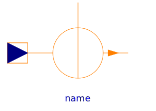

This package contains sources of a magnetic potential difference or a magnetic flux:
| Name | Description |
|---|---|
|
|
Constant magnetomotive force |
|
|
Signal-controlled magnetomotive force |
| Source of constant magnetic flux | |
|  SignalMagneticFlux | Signal-controlled magnetic flux source |